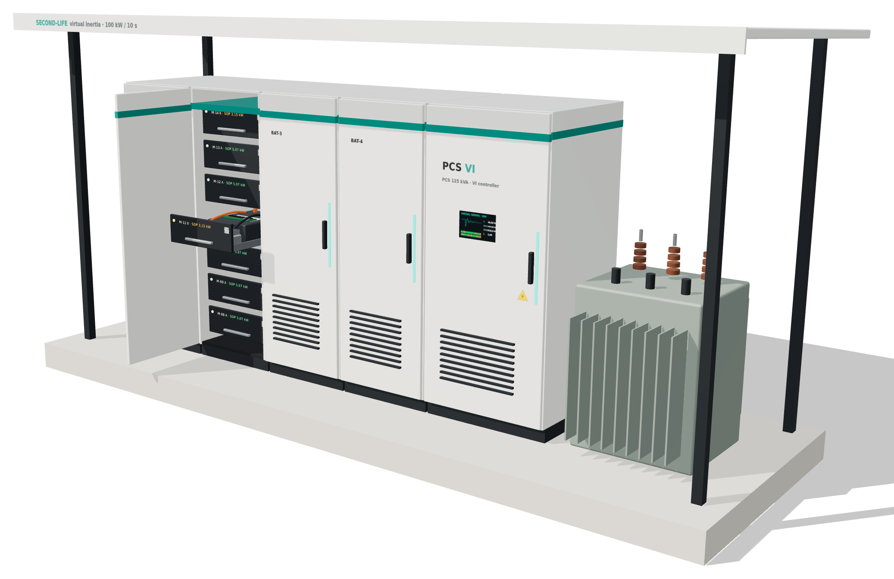
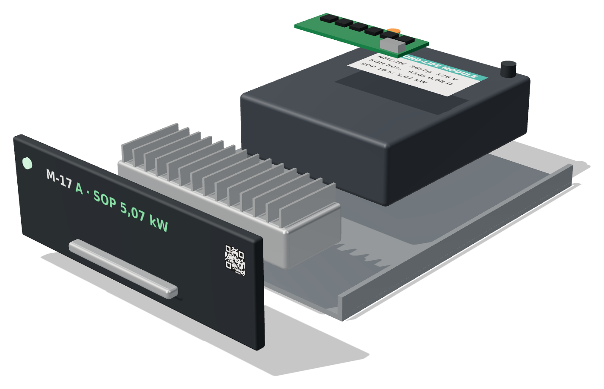

BAT-1 sampai BAT-4 · 28 modul PCS 125 kVA + pengendali VI Trafo 0,4/20 kVBREYI 2026 · Bali Renewable Energy Young Innovators
Baterai EV bekas untuk menjaga frekuensi microgrid Bali.
ReVIA membagi daya ke tiap modul sesuai batas amannya sendiri, sehingga modul bekas yang tidak seragam tetap bisa memberi inersia virtual 100 kW selama 10 detik.
Proyek riset mahasiswa Universitas Gadjah Mada
- Daya aman
- 100 kW / 10 s
- dari 28 modul dengan batas daya berbeda-beda
- Gangguan 250 kW
- −34%
- deviasi nadir frekuensi: 49,597 Hz menjadi 49,734 Hz
- Modul bekas EV
- 28 modul
- 20 kelas A dan 8 kelas B, dipilih dari 35 yang diuji
01 Masalah
Makin banyak surya, makin tipis inersia.
Rotor generator diesel itu berat dan berputar. Saat pembangkit atau beban tiba-tiba berubah, massa berputar itu menahan frekuensi agar tidak jatuh terlalu cepat. Inverter PLTS tidak punya rotor.
Nusa Penida menargetkan 100% energi terbarukan pada 2030, bagian dari Bali Net Zero Emission 2045. Microgrid pulau yang terisolasi ini (PLN, November 2025) menggabungkan PLTS Suana 3,5 MWp, BESS 1,8 MWh, dan PLTD. Makin banyak PV dan makin sedikit unit diesel yang menyala, makin kecil inersianya. Frekuensi turun lebih cepat dan lebih dalam setelah gangguan.
- RoCoF
- laju perubahan frekuensi, dalam Hz per detik
- Nadir
- titik terendah frekuensi setelah gangguan
02 Cara kerja
Setiap modul bekerja sampai batasnya sendiri.
Modul baterai mobil listrik yang tidak lagi layak jalan masih bisa mengeluarkan daya besar dalam waktu singkat. Itu yang dibutuhkan inersia virtual: inverter menyuntikkan daya sebanding dengan RoCoF selama beberapa detik, seperti rotor.
-
01
Kumpulkan
Modul EV bekas dikumpulkan. Tidak cocok lagi untuk mobil, tetap mampu memberi daya singkat.
-
02
Inspeksi dan uji
Kapasitas, resistansi, dan uji pulsa. Dari 35 modul diuji, 28 yang lolos.
-
03
SOP passport
Tiap modul mendapat batas daya amannya selama 10 detik, dicetak sebagai QR.
-
04
Pasang di laci
Satu modul per laci, lengkap dengan BMS dan konverter DC/DC dua arah terisolasi 6 kW.
-
05
Baca f dan RoCoF
Pengendali VI mengukur frekuensi dan RoCoF di titik sambung.
-
06
Bagi sesuai SOP
Daya dibagi sebanding SOP tiap modul. Bila modul melemah, λ diperkecil otomatis.
-
07
Injeksi
Daya masuk ke microgrid dalam sekitar 100 ms.
-
08
Serah-terima
Setelah 10 detik, governor diesel mengambil alih.
Paspor untuk setiap modul
Modul bekas punya kapasitas yang sama tetapi resistansi dan batas arus yang berbeda. SOP (State of Power) merangkum itu jadi satu angka: daya maksimum yang aman diberikan modul selama 10 detik. Angka dan kelasnya tercetak sebagai QR di laci.
- Modul
- M-17
- SOH
- 80%
- Kapasitas
- 31,5 Ah nominal
- Susunan
- 36s2p, 126 V
- SOP 10 s
- 5,07 kW
Kenapa tidak dibagi rata?
Ilustrasi hitungan: 100 kW dibagi ke 20 modul A dan 8 modul B. Pada simulasi penuh, semua modul tetap di bawah 85,6% SOP.
Hukum kendali
P = −λ·Kv·df/dt − λ·Kd·Δf
pi = P · SOPi / ΣSOP
Kv = 80 kW·s/Hz, Kd = 300 kW/Hz. λ turun otomatis jika ΣSOP turun.
03 Di dalam laci
Satu modul, satu laci, satu konverter.
Karena tiap modul punya BMS dan konverter sendiri, modul bisa didorong sampai batasnya masing-masing, atau diisolasi tanpa mengganggu yang lain. Empat kabinet berisi 7 laci, total 28 modul.

Spesifikasi unit
- Kabinet baterai
- 4 unit (BAT-1 sampai BAT-4), masing-masing 7 laci
- Modul
- 28: 20 kelas A (SOH 80%, SOP 5,07 kW), 8 kelas B (SOH 70%, SOP 3,15 kW)
- PCS
- Inverter 125 kVA, pengendali VI, layar HMI
- Konverter per laci
- DC/DC dua arah terisolasi, 6 kW
- Sambungan
- Trafo pad-mounted 0,4/20 kV
- Lokasi
- Pelat beton di bawah kanopi peneduh, luar ruang, lingkungan pesisir tropis
04 Hasil
100 kW dari perangkat keras yang sama.
Dengan 28 modul yang sama, hanya cara membagi dayanya yang berbeda. Hasil di bawah berasal dari perhitungan pra-desain dan simulasi representatif.
Frekuensi dan daya injeksi, gangguan 250 kW
Pilih skema untuk dibandingkan dengan kasus tanpa VI (garis abu-abu).
Simulasi representatif, parameter asumsi (sistem diesel 3 MVA, H = 1,5 s). Bukan data lapangan PLN; validasi dengan data PLN adalah tahap berikutnya. Energi bank sekitar 85,7 kWh, jadi ukuran sistem ditentukan oleh daya, bukan energi.
05 Biaya dan dampak
Modul bekas lebih murah, dan dipakai lebih lama.
Untuk konfigurasi yang sama, modul bekas lebih murah dari modul baru walaupun ada biaya uji tambahan: 35 modul diuji untuk mendapat 28 yang layak.
- 28 modul mendapat pemakaian kedua alih-alih jadi limbah: 20 kelas A, 8 kelas B.
- 0,156 kWh terpakai per kejadian dari bank sekitar 85,7 kWh. Yang menentukan adalah daya, jadi modul yang sudah turun SOH masih berguna.
- Mendukung target 100% energi terbarukan Nusa Penida pada 2030 dengan menutup celah inersia saat diesel dikurangi.
Biaya ilustratif, konfigurasi sama
Selisih Rp58,76 juta. Estimasi ilustratif, bukan penawaran vendor.
06 Peta jalan
Dari perhitungan ke demonstrasi terbatas.
Hasil sekarang masih di atas kertas dan simulasi. Lima tahap berikut yang membuatnya terbukti di perangkat keras.
- 01
Data dan pembanding
Mengumpulkan data dan membandingkan dengan BESS yang sudah ada bersama PLN.
- 02
Karakterisasi modul
Menguji modul nyata untuk mendapatkan parameter SOP.
- 03
Kalibrasi model
Mengkalibrasi model SOP dan menjalankan simulasi EMT.
- 04
Hardware-in-the-loop
Membandingkan pembagian tetap dengan adaptif pada perangkat keras.
- 05
Demonstrasi terbatas
Uji coba dalam skala terbatas.
07 Tim
Tiga mahasiswa, satu proyek.
ReVIA dikerjakan untuk BREYI 2026 oleh tim dari Universitas Gadjah Mada.
Mirzariel Akmal Norman
Ketua
Bagus Aldiguna
Anggota
Irma Nur Cahyani
Anggota